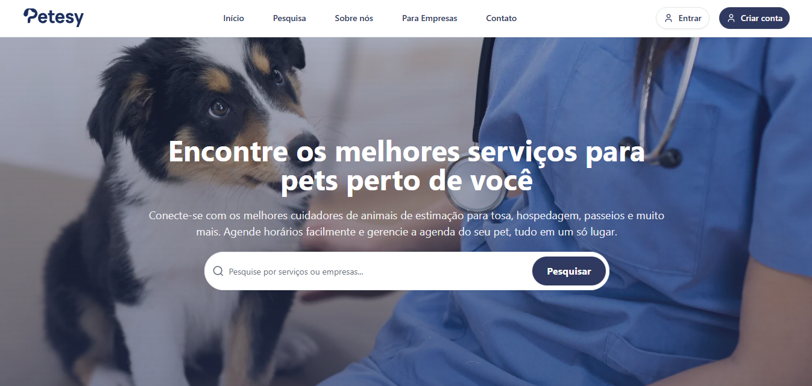
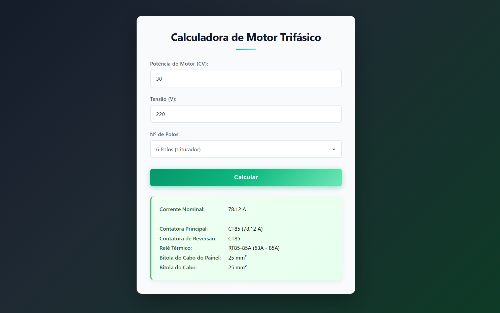
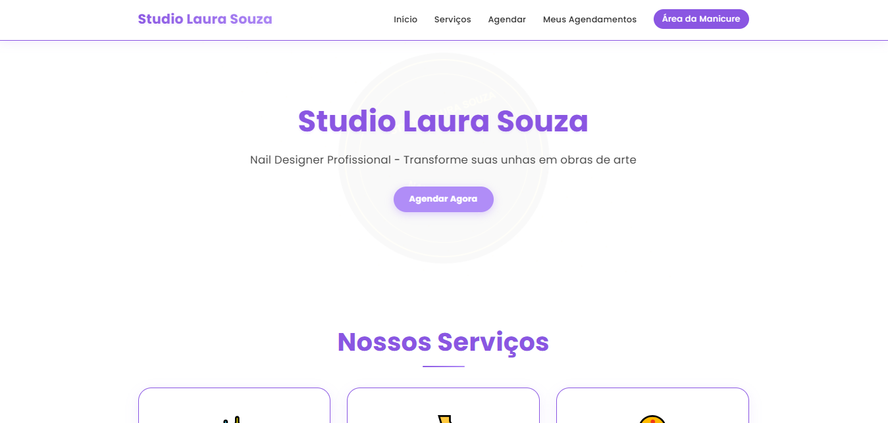
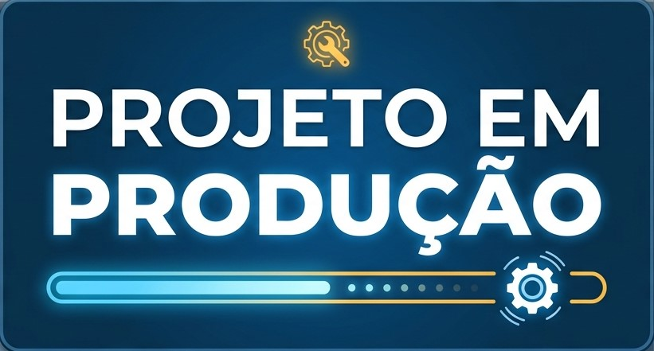

PROJETOS
Repositórios em destaque no meu GitHub.

TCC — Agendamento online de serviços Pet
Contexto: Front-end de um sistema acadêmico como trabalho de conclusão de curso, focado em interface limpa e usável.
O que fiz: Estruturei toda a camada de apresentação em React com TypeScript, componetizei telas, tratei estados e integração com a API.
Tecnologias: React, TypeScript, Next.js, consumo de API REST, GitHub.
Aprendizado: Organização de projeto front-end em larga escala, tipagem forte com TypeScript e boas práticas de componentes reutilizáveis.

Calculadora — dimensionamento de componentes elétricos
Contexto: Necessidade de agilizar cálculos recorrentes de parâmetros de motores trifásicos, reduzindo erro manual.
O que fiz: Modelei as fórmulas elétricas e criei uma interface web simples onde o usuário insere dados e recebe os resultados automaticamente, mostrando quais componentes e cabos usar no projeto.
Tecnologias: HTML, CSS, JavaScript, GitHub Pages.
Aprendizado: Validação de entrada de dados, manipulação de DOM e transformação de regras técnicas em lógica de programação.

Site Manicure (Freelance)
Contexto: Solução para divulgação de serviços de manicure, com foco em presença online e captação de clientes locais.
O que fiz: Desenvolvi uma landing page responsiva, com seções claras de serviços, contato e identidade visual alinhada ao negócio.
Tecnologias: HTML, CSS, JavaScript, GitHub Pages.
Aprendizado: Noções de UX, preocupação com conversão de clientes e experiência de comunicação com cliente real.
.png)
Portifolio (este site)
Contexto: Página pessoal para apresentar projetos, habilidades e contato de forma clara e responsiva.
O que fiz: Estruturei layout, tema visual inspirado em C#/games, animações de entrada e modal para visualizar imagens dos projetos.
Tecnologias: HTML, CSS, JavaScript, hospedagem em GitHub Pages.
Aprendizado: Comunicação técnica, UX de leitura e manutenção de um site estático com boa performance.

Cadsimu
Contexto: Projeto em C# para explorar lógica de aplicação, estrutura de código e boas práticas na stack .NET.
O que fiz: Desenvolvi funcionalidades do sistema com foco em organização de camadas e clareza do domínio.
Tecnologias: C#, .NET, Git, GitHub.
Aprendizado: Aprofundamento em C# e no ciclo de desenvolvimento de um repositório real no GitHub.
Assistente-IA
Contexto: Assistente técnico virtual baseado em IA, em C#, que simula ter um auxiliar ao seu lado durante uma partida de futebol.
O que fiz: Modelei a experiência de interação e a lógica do assistente no contexto do jogo, com foco em usabilidade e feedback ao usuário.
Tecnologias: C#, conceitos de IA aplicados ao domínio, GitHub.
Aprendizado: Integração de regras de negócio com fluxos orientados a eventos e exploração de IA em cenário esportivo.